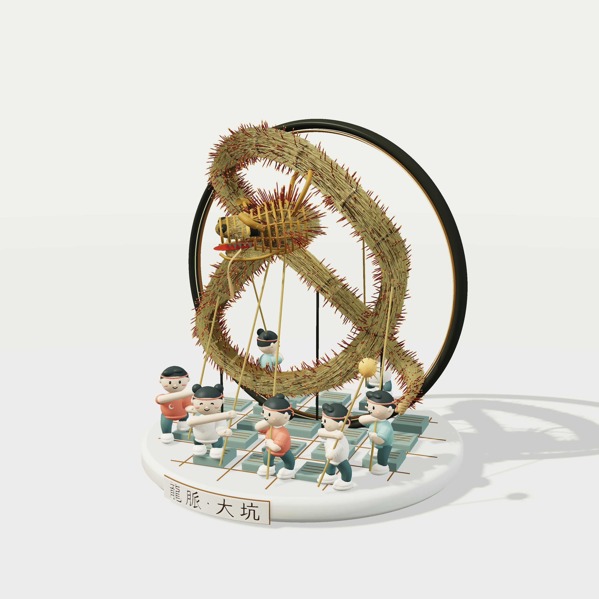

桌上非遺記憶燈
數碼化香港非遺 ／ 街坊小隊 03

七位可愛街坊，一道團圓流光。讓街坊的節奏，走進日常。
從街頭盛會，到日常可以凝望的文化記憶。
以「社區合力，讓非遺薪火相傳」為核心，由創作者提出作品名稱、核心概念及詳細設計規格。本次以輕盈的新潮文創語彙，讓七位圓潤可愛的街坊公仔共同托起火龍，將觀看焦點從物件延伸至人與社區。
月輪、雙環曲線、流光、窄巷底座及人偶的數量、衣色、站位，均為本作的設計設定；並非指定年份的巡遊復原。作品是可互動欣賞的數碼燈具概念。